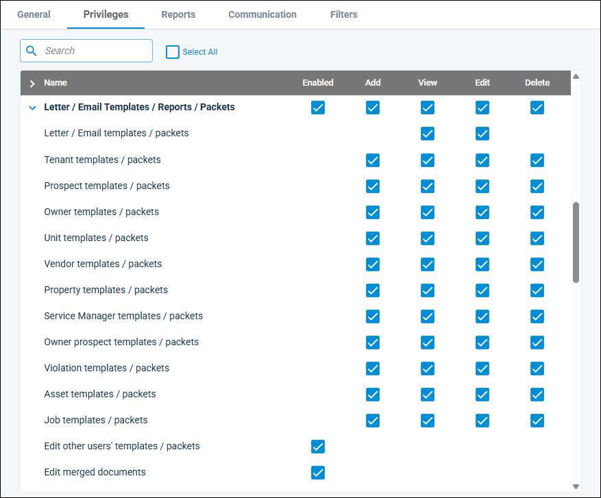
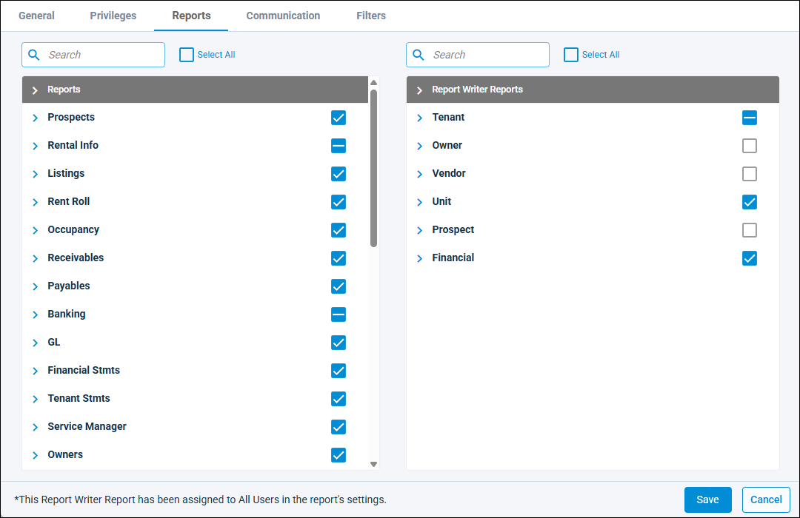
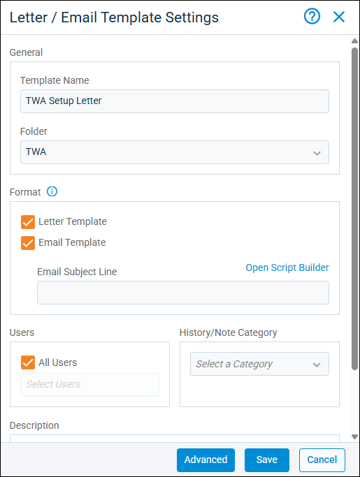
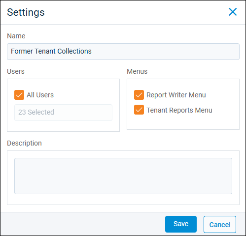

Source: https://rmxhelp.rentmanager.com/Topics/Express/KB/Report-Troubleshoot-Menu.htm
Why is my report/letter not in the menu?
If you expect to see a letter or report in a menu but do not, there are several settings to check first. If you do not have a role in your organization that allows you to change privileges and permissions in Rent Manager, you need to reach out to your administrator.
If you are an administrator and you or one of your users cannot see a letter or report, try the following common troubleshooting solutions. Make sure the user has the correct privileges to view and run letters and reports and that the user's access permissions for the report or letter are correct. Also check the Report Writer Manager and Letter/Email Templates pages to make sure the report or letter has the correct display settings.
Check User Privileges
If a user cannot see or run any reports or letters, it is likely they do have essential privileges related to running and viewing letters and reports.
Related Privileges
To change your own or another user's privileges, you need the following privileges:
| Group | Privilege | Column |
|---|---|---|
| System | Manage all users and privileges | View, Edit |
| Manage assigned users and privileges | View, Edit |
For more information, refer to Control User Access.
To update a user's privileges, do the following:
-
Go to
 arrow_forward
arrow_forward  Administration, then go to and select a user from the list.
Administration, then go to and select a user from the list.
The user's details page displays. -
Select the Privileges tab.

-
In the Letter/Email Templates/Reports/Packets section, assign the needed privileges from the following:
Privilege Column Description Letter/Email templates/packets View
Users need this privilege to view any reports or letters.
Run reports
Enabled
Users need this privilege to run all non-accounting reports.
Run accounting reports
Enabled
Users need this privilege to run view and run reports in the General Ledger and Financial Statements categories.
Entity templates/packets
View
Users need this privilege to view custom letter templates you create. There is a privilege for each entity type, such as for owners, assets, violations, and prospects.
Report writer templates
View
Users need this privilege to view custom reports you create. There is a privilege for each report type, such as for owners, assets, violations, and prospects.
-
Click Save.
The user now has privileges to view or run the report or letter.
Check User Access Permissions for Letters and Reports
If a letter or report displays for some users and not others, or if a user can see some letters and reports but not others, the most likely cause is that the user does not have access to the individual letter or report.
Related Privileges
To change your own or another user's letter and report access permissions, you need the following privileges:
| Group | Privilege | Column |
|---|---|---|
| System | Manage all users and privileges | View, Edit |
| Manage assigned users and privileges | View, Edit |
For more information, refer to Control User Access.
To give users access permissions for letters and reports, do the following:
-
Go to
arrow_forward Administration, then go to and select a user from the list.
The user's details page displays. -
Select the Reports or Letters tab.
-
Find the report or letter in one of the lists, and select it to give the user access.

-
Click Save.
The user now has access permissions to view the report or letter.
Check Letter and Report Display Settings
If you ruled out privileges and access permissions and a user still cannot see a custom report or letter template that you created, the most likely cause is the display settings on the report.
Related Privileges
To change the display settings for letter templates and custom reports, you need the following privileges:
| Group | Privilege | Column |
|---|---|---|
| Letter/Email Templates/Reports/Packets | Letter/Email templates/packets | View |
| Edit other users' templates/packets | Enabled | |
| Entity templates/packets | View, Edit |
For each entity for which you need to edit report or letter templates, you need the associated Entity templates/packets privilege (e.g., Owner templates/packets).
For more information, refer to Control User Access.
You can select which menus display custom reports and letter templates on the Report Writer Manager and Letter/Email Templates pages.
Letter Templates Settings
To check letter template display settings, do the following:
-
Go to
arrow_forward Communication arrow_forward Letters arrow_forward Letter Templates.
The Letter/Email Templates page displays. -
Select the Type of the report you're looking for.
-
Next to the template, click
 arrow_forward Settings.
arrow_forward Settings.
-
In the Format section, select from the following display options:
Option Description Letter Template
The template is made available from the Write Letter Batch pop-up, the
arrow_forward Write Letters menu for the applicable template type.Email Template
The template is made available when writing emails. Enter the Email Subject Line you want to display on your emails when this template is selected.
More Information
The Email Template option is available only for standard letter templates and is hidden if the Make VPO Ready and/or the Signable Document options are selected on the template's details page.
-
Click Save.
Users with correct privileges and access permissions can now select the letter template on the menus where it is active.
Report Writer Manager Settings
To check custom report display settings, do the following:
-
Go to
 arrow_forward Report Writer.
arrow_forward Report Writer.
The Report Writer Manager page displays. -
Select the Report Type of the report you're looking for.
-
Next to the report, click
arrow_forward Settings.
-
In the Menus section, select from the following display options.
Option Description Report Writer Menu
The report can be selected by going to
arrow_forward Report Writer. Custom reports in this menu are sorted by type.[Template Type] Reports Menu
The report can be selected from any menu where you'd normally find reports, such as the main menu, on listing pages, and on details pages.
-
Click Save.
Users with correct privileges and access permissions can now select the report on the menus where the report is active.